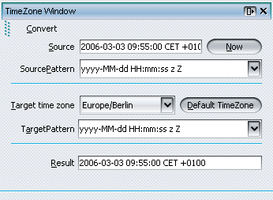

)
.
)
.
This module calculates a given date, and time to the specified timezone.
Open the TimeZone Window by selecting the "Open TimeZone Window" action,
located at Window|Open TimeZone Window
()
.
For calculating the result date do the following steps:
The Result field shows the date and time of the Source field using the selected Target time zone.
Details about the source, the result, and the time zone are written to the Output window.
A sample TimeZone window:
